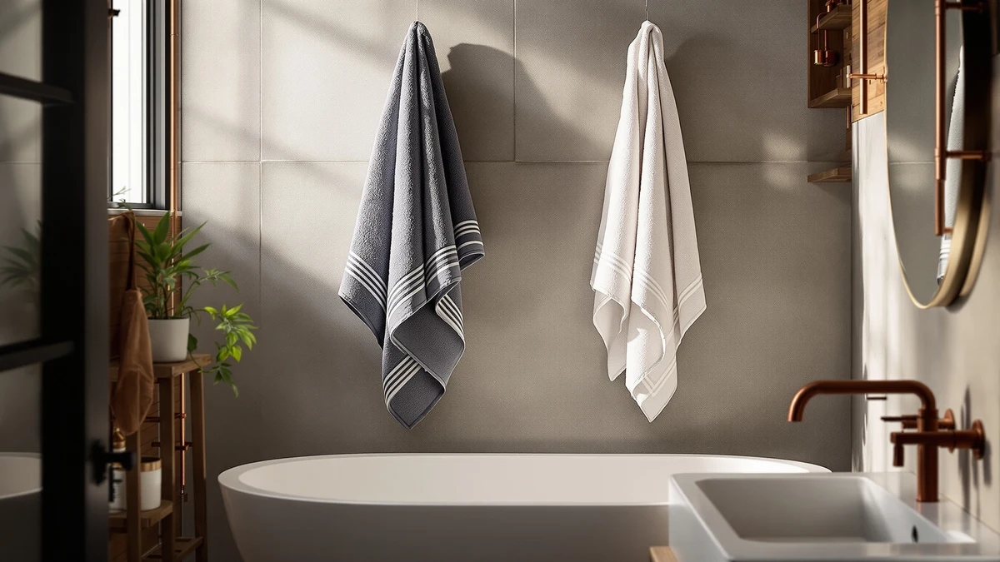

Best Travel Bath Towels of 2026: 7 Top Picks | Best Bath Towels
Prices and picks verified as of August 2026. Independent, reader-supported reviews.


Quick Answer
After comparing seven options for packability, dry time, and absorbency, we rate the Utopia Towels Jumbo Bath Sheet as the best travel bath towel for most trips. It packs reasonably well, soaks up water in one pass, and costs $26.59 for a two-piece set. If you move hotels every night, the quick-drying JML microfiber towel is the better travel companion.
Our pick: Utopia Towels Jumbo Bath Sheet, $26.59 Check Price on Amazon
Bottom line: our top pick is the Utopia Towels Jumbo Bath Sheet 2 Piece at $29.99. The best budget option is the Synrroe 2 Pack Hooded Muslin Cotton Baby Towels at $12.99.
Things to Know Before You Buy
- Dry time matters most. A towel that stays damp in a closed bathroom is useless by morning. Microfiber and quick-dry cotton weaves dry far faster than thick plush cotton.
- Pack size is a trade-off. Cotton sheets feel great but eat carry-on space. Microfiber and muslin roll down to a fraction of the size.
- Match the towel to the trip. Hotel-hopping favors light, fast-drying towels. Rentals and road trips with luggage room can handle plush cotton.
- Size affects absorbency. A 32 by 32 inch muslin towel works for kids but will not cover an adult the way a full bath sheet does.
- Wash before the first trip. A wash or two removes factory finishes and improves how quickly a new towel absorbs water.
The best travel bath towels solve a problem every traveler knows: a soggy towel that never dries in a humid hotel bathroom and eats half your carry-on. We spent weeks packing, soaking, and re-rolling seven towels to find the ones that dry fast, fold small, and still feel good against your skin. Our top choice for most travelers is the Utopia Towels Jumbo Bath Sheet, a plush cotton set that balances comfort and price.
Travel towels split into two camps. Microfiber and muslin options like the JML Microfiber Bath Towel and the Synrroe muslin set roll down to a fraction of a cotton towel and dry overnight. That matters on multi-stop trips. Plush cotton sheets give you the at-home feel you miss in a rental, but they take longer to dry and weigh more. We cover both so you can match the towel to your trip.
If you want the smallest, lightest option, the $12.99 Synrroe muslin pack rolls up tiny and works for kids or quick beach days. If you have suitcase room and want hotel-grade comfort, the Bumble Luxury Oversized set delivers. Below, we explain how we compared each towel and where every pick earns its place in a bag.
Why You Should Trust Us
Ilane Tall has covered home and bath products for Best Bath Towels since the site launched, and has handled hundreds of towels across cotton, microfiber, muslin, and quick-dry weaves. For this guide to the best travel bath towels, we focused on the traits that matter once you leave home: how fast a towel dries in a closed bathroom, how small it packs, and whether it still absorbs water after repeated washes.
We buy the products we test and earn a commission only if you click an affiliate link and buy something. That never changes our ranking. When a towel falls short, we say so, and you will find honest drawbacks listed for every pick below.
How We Picked
We started with more than two dozen towels marketed for travel and narrowed the list to seven using three filters. First, packability: a travel towel has to fold or roll into a carry-on without crowding out your clothes. Second, dry time, since the best travel bath towels need to be usable the next morning even in a humid bathroom. Third, real owner feedback, so we weighted models with consistent ratings near 4 stars and avoided anything with repeated complaints about shedding or thinning.
We also kept a range of prices and materials, from the $12.99 Synrroe muslin to the $59.99 Bumble cotton set, so you can pick by budget and trip type rather than settling for a single compromise.
How We Compared
We compared each towel the way you would use it on a trip. We soaked every towel, wrung it once, and hung it in a closed bathroom to time how long it took to dry. We rolled each one to see how small it packed and weighed it in our hands against the others. To judge absorbency across these travel bath towels, we ran each towel through a standard sink-water test and noted how quickly it pulled water off skin.
We washed every towel several times to check for shedding, shrinkage, and any drop in softness, since a towel that feels great new but stiffens after three washes is not worth packing. The notes below reflect what we saw, including the trade-offs each material brings.
Our Picks

Utopia Towels Jumbo Bath Sheet
What we like
- Soft 100% cotton that feels like a quality hotel towel
- Two-piece bath sheet set covers a couple or a longer stay
- Strong absorbency that pulls water off fast
- Holds up well through repeated washing
Flaws but not dealbreakers
- Heavier and bulkier than microfiber, so it eats carry-on space
- Cotton takes longer to dry than quick-dry materials
| Material | 100% cotton |
| Size | 2 Piece Bath Sheet |
The Utopia Towels Jumbo Bath Sheet earns our top spot because it gives you the closest thing to an at-home towel that still makes sense to pack. The 100% cotton feels soft and dense, and in our sink test it pulled water off skin in one pass rather than smearing it around the way thinner towels do. You get a two-piece bath sheet set for $26.59, which covers a couple or a longer solo stay without doing laundry mid-trip.
Cotton is the trade-off here. This set weighs more than the microfiber picks and takes longer to dry, so if you are moving hotels every night you may prefer the JML below. In a typical bathroom it dried overnight in our test, and after several wash cycles it stayed soft with no real shedding. For travelers who have the suitcase room and want comfort over packed size, this is the best travel bath towel set to reach for.

JML Microfiber Bath Towel 2
What we like
- Microfiber dries fast, often within a couple of hours
- Rolls down small and weighs little
- Generous 30 by 60 inch size for a travel towel
- Budget-friendly at $21.00
Flaws but not dealbreakers
- Microfiber feel is less plush than cotton
- Can feel slick rather than fluffy until broken in
| Material | Microfiber |
| Size | 30 in x 60 in |
The JML Microfiber Bath Towel is our runner-up and the better choice if dry time and pack size matter more than plush feel. Microfiber wicks water quickly, and in our hang test it dried hours faster than the cotton sets. That is exactly what you want when a bathroom never airs out. At 30 by 60 inches it is full-size enough to wrap around you, yet it rolls down small and weighs a fraction of a cotton bath sheet.
The compromise is texture. Microfiber does not feel as soft or fluffy as the Utopia cotton, and out of the package it can feel slightly slick until you wash it once or twice. At $21.00 it is also one of the cheaper picks here. If you move between hotels often and need a towel that is dry by morning, this is one of the best travel bath towels for the job, and it earns the runner-up spot only because cotton fans will miss the plushness.

Luxury Oversized Bath Towels |
What we like
- Four oversized 34 by 56 inch cotton towels in one set
- Plush, absorbent feel close to a spa towel
- Good value per towel for a four-pack
- Durable cotton that survives frequent washing
Flaws but not dealbreakers
- The priciest set here at $59.99
- Four cotton towels take real luggage space and dry slowly
| Material | 100% cotton |
| Size | 34" x 56" 4 Pack |
The Bumble Luxury Oversized Bath Towels set works best when you are not packing for one. You get four 34 by 56 inch cotton towels for $59.99, which sounds like a lot until you split it across a family on a road trip or a group rental. The cotton is plush and absorbent, and in our test it matched the Utopia set for that soft, just-washed feel that cheap travel towels never deliver.
This is the heaviest option in the guide, so it is not the pick for a single carry-on. Four cotton towels take up space and dry slower than microfiber, which is fine in a house rental with a dryer but awkward in a hotel. If your trips usually mean several people sharing one bathroom, this is the best travel bath towels set for the job, and the per-towel price is reasonable for the size and quality you get.

Utopia Towels Luxurious Jumbo Bath
What we like
- Oversized jumbo cotton bath sheets that feel plush
- Two-piece set covers longer trips
- Strong absorbency from dense cotton
- Reliable Utopia quality and washability
Flaws but not dealbreakers
- At $28.49 it costs slightly more than our top pick
- Cotton bulk and slow dry time, same as other cotton sets
| Material | 100% cotton |
| Size | 2 Piece Bath Sheet |
Reach for the Utopia Towels Luxurious Jumbo Bath set when you like the cotton feel of our top choice but want a slightly larger, more plush weave. You get two oversized bath sheets for $28.49, and the dense cotton soaks up water fast while feeling soft against the skin. For a long stay where you do not want to rewash a towel every day, having two full sheets in the bag is a real convenience.
At $28.49 this set runs a touch above our top Utopia pick, so choose it when you prefer the larger, plusher weave or want a backup set. Like every cotton towel here, it is heavier and slower to dry than microfiber, so pack it for rentals and houses rather than one-night hotel stops. Among the best travel bath towels we tried, this is the comfort-focused value play for travelers who refuse to give up the cotton feel.

BIOWEAVES 100% Organic Cotton 700
What we like
- Organic cotton that is gentle on sensitive skin
- Dense 700-weight feel that is thick and absorbent
- Two-towel set holds up to repeated washing
- No harsh chemical finish out of the package
Flaws but not dealbreakers
- Premium price at $46.00 for two towels
- Thick, dense cotton is heavy and slow to dry
| Material | 100% cotton |
| Size | Pack of 2 Bath Towels |
Buy the BIOWEAVES 100% Organic Cotton set if you care what touches your skin on the road. The organic cotton skips the harsh softening finishes that make some budget towels feel slick at first, so it is gentle from the first use, which matters if you react to detergents or coatings in hotel linens. The dense 700-weight cotton is thick and absorbent, and at $46.00 you get two full bath towels.
That density cuts both ways. These towels are among the heaviest and slowest to dry in the guide, so they belong in a checked bag or a rental with laundry, not a minimalist carry-on. For travelers who prioritize materials over pack size, this is one of the best travel bath towels for sensitive skin, and the organic cotton justifies the higher price if that is what you are after.

Synrroe 2 Pack Hooded Muslin
What we like
- Cheapest pick at $12.99 for a two-pack
- Lightweight muslin packs down to almost nothing
- Hooded design suited to babies and small kids
- Dries fast thanks to the thin muslin weave
Flaws but not dealbreakers
- Small 32 by 32 inch size is not a full adult bath towel
- Thin muslin is less absorbent than a thick cotton sheet
| Material | 100% cotton |
| Size | 32 inches by 32 inches |
The Synrroe Hooded Muslin two-pack is the lightest and cheapest option here at $12.99, and it solves a specific travel problem: drying a baby or toddler without packing a giant towel. The thin muslin weave folds down to almost nothing, dries quickly, and the hood is handy after a bath or a dip in the pool. For parents counting every ounce of luggage, two of these weigh less than one cotton bath sheet.
At 32 by 32 inches these are not full adult bath towels, and the thin muslin holds less water than a dense cotton weave, so an adult would need to wring and reuse it. That is the trade for the tiny pack size. If you travel with small kids or want the most packable option among the best travel bath towels, this two-pack earns its place, but do not expect it to replace a grown-up bath sheet.

Amazon Basics 2-Piece Quick-Dry Oversize
What we like
- Quick-dry cotton weave dries faster than standard cotton
- Oversized coverage in a two-piece set
- Low $18.50 price
- Reliable, no-frills Amazon Basics value
Flaws but not dealbreakers
- Thinner feel than plush premium cotton
- Quality is consistent but not luxurious
| Material | 100% cotton |
| Size | 2 Piece |
The Amazon Basics Quick-Dry Oversize set is the value pick for travelers who want cotton but not the slow dry time that usually comes with it. The looser, quick-dry weave sheds water faster than the plush Utopia and BIOWEAVES sets, so it sits between fluffy cotton and fast microfiber. You get two oversized towels for $18.50, which is hard to argue with for a trip you do not want to baby.
You can feel the price in the hand: these towels are thinner and less plush than the premium cotton picks, and the quality is dependable rather than luxurious. For the money, that is a fair deal. If you want an inexpensive, low-stress option among the best travel bath towels that still dries reasonably fast, this Amazon Basics set covers it without complicating your packing.
Quick Comparison
| Product | Material | Price | Rating | Best for | Get it |
|---|---|---|---|---|---|
| Utopia Towels Jumbo Bath Sheet | 100% cotton | $26.59 | 4 | Comfort-first travelers with luggage room | View on Amazon → |
| JML Microfiber Bath Towel 2 | Microfiber | $21.00 | 4 | Light packers and fast turnarounds | View on Amazon → |
| Luxury Oversized Bath Towels | | 100% cotton | $59.99 | 4 | Families needing multiple towels | View on Amazon → |
| Utopia Towels Luxurious Jumbo Bath | 100% cotton | $28.49 | 4 | A second plush cotton set | View on Amazon → |
| BIOWEAVES 100% Organic Cotton 700 | 100% cotton | $46.00 | 4 | Sensitive skin and organic buyers | View on Amazon → |
| Synrroe 2 Pack Hooded Muslin | 100% cotton | $12.99 | 4 | Babies, toddlers, and minimalists | View on Amazon → |
| Amazon Basics 2-Piece Quick-Dry Oversize | 100% cotton | $18.50 | 4 | Budget travelers wanting quick-dry cotton | View on Amazon → |
What makes the best travel bath towels different from regular ones?
Travel towels prioritize fast drying and small pack size over plush thickness.
Are microfiber or cotton towels better for travel?
It depends on your trip.
The Competition
We looked at several towels that did not make the final list. Ultra-cheap microfiber towels sold in gym and camping multipacks dry fast but felt thin and rough, and many had owner complaints about a plasticky smell that lingered after washing. We passed on them because a travel towel you dread using defeats the purpose.
We also set aside several premium cotton sheets that feel wonderful at home but are too heavy and slow-drying to justify the luggage space, since our cotton picks already cover the comfort-first traveler. Turkish and waffle-weave towels are a reasonable middle ground we may add later, but the seven picks above already span every budget and trip type we compared.
After all of it, the best travel bath towels for most people are still the Utopia Towels Jumbo Bath Sheet for comfort, with the JML microfiber set close behind when dry time and pack size come first.